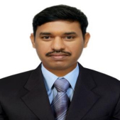

Department Of EEE
VISION
To emerge as a leading Electrical and Electronics Engineering Department in Technical Education and Research in India with focus to produce professionally competent and socially sensitive engineers capable of working in multidisciplinary global environment.
MISSION
- To empower in the fundamentals of engineering and provide the academic environment to pursue and attain competencies in their studies at undergraduate and post graduate level in Electrical & Electronics Engineering.
- To be continuous learning department by developing strong liaison with academia, R&D institutions and industry related to electrical and electronics for exposure in practical aspects of engineering and providing solutions to the industrial and societal problems for sustainable improvements.
- To inculcate team work, leadership, professional ethics, use of modern tools, IPR issues related to Electrical & Electronics Engineering so that graduates are encouraged to obtain patents and respond to competitive global environment.

Dr.S P V Subba Rao
Program Educational Objectives(PEO's)
PEO-I
To empower the students by providing necessary knowledge, critical thinking and problem solving capabilities in the field of Electrical and Electronics Engineering so that they can excel in their profession, in industry, higher studies and Research & Development.PEO-II
To develop competencies in core and allied fields, so as to conduct experiments, comprehend, analyze, design and apply appropriate techniques / tools to arrive at optimal solutions to face real time challenges.PEO-III
To inculcate the sense of responsibility towards ethics, Intellectual Property rights, good communication skills and entrepreneurship with adequate knowledge of project / finance management skills for betterment of society at large